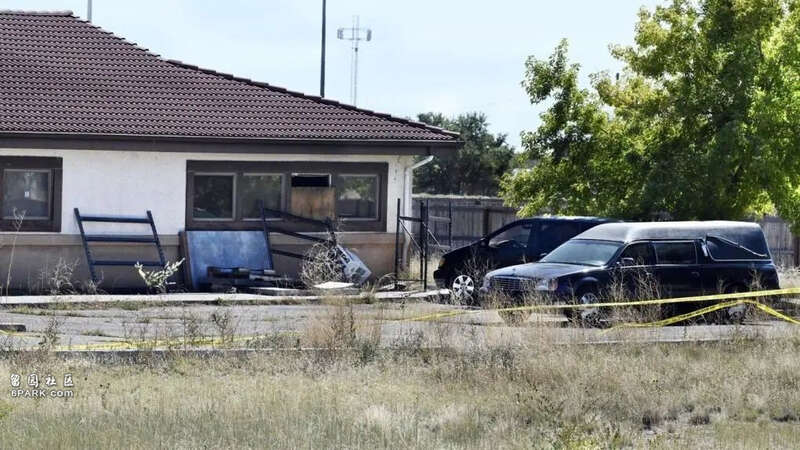

美国科罗拉多州法官5日判决逮捕当地一家殡仪馆的老板，罪名包括虐待尸体、非法出售尸体器官、洗钱、盗窃和伪造；同时，判其向受害者亲属支付9.5亿美元。
据悉，该殡仪馆老板霍尔福德夫妇被控非法存放190具尸体，且均已腐烂。同时，该对夫妇向亡者家属寄送假骨灰，还被指控挪用近90万美元的疫情救济金，用于两人度假、整容手术、购买珠宝和其他个人开支。据调查，他们还向死者家属收取了超过13万美元的费用，声称提供火葬和埋葬服务，但却从未兑现这些承诺。

“回归自然”殡仪馆外围
克瑞斯蒂娜·佩吉就是这一案件的受害人之一。她在2019年将自己儿子的遗体送往这家名为“回归自然”的殡仪馆火化，随后她带着装有儿子“骨灰”的骨灰盒走遍美国各地，以了却儿子生前的愿望。直到2023年，佩吉被通知其儿子的遗体在“回归自然”殡仪馆被发现，她才知道自己上当受骗。此时，距离其子去世已经过去了四年。
随着190具遗体的身份得到确认，许多亡者家属收到了类似的消息，许多人就此终日无法安宁，梦见自己腐烂的家人可能是什么样子，或者因辜负了亲人而内疚不已。佩吉说：“这份判决书会让公众对案件有更多的了解。我希望这能让人们发现，‘这不仅仅是骨灰的问题’，受到影响的人远远不止诉讼中列出的那么多。”
代理受害者集体诉讼的律师安德鲁·斯万表示，在押的乔恩和保释在外的卡莉（霍尔福德夫妇）没有认罪，也都没有出席听证会。斯万说：“我本来希望他们能出现在听证会上，让他们站在被告席上，向受害者解释他们是怎么做到这样‘毫无人性’的，但他们并没有出现。”
此案让公众关注到科罗拉多州殡仪馆管理混乱的问题，并促使科罗拉多州的立法者通过了针对该州殡仪行业的全面法规。科罗拉多州殡仪馆协会主席乔·沃尔什说：“作为唯一一个无证殡葬州，科罗拉多州不能再成为笑柄了。”
据报道，科罗拉多州以前的相关法规是全美国最宽松的。目前，新提出的法规中，要求监管机构定期检查殡仪馆，并赋予其更多执法权力；另一项要求则是对殡仪馆馆长和其他行业人员进行从业许可。许可条件包括但不限于背景调查、获得殡葬科学学位、通过国家考试和拥有工作经验。此前，科罗拉多州的殡仪馆馆长无需高中毕业，更不用说获得学位了。目前，该州殡仪馆行业基本赞成这些变化，但一些人认为，没有必要对殡仪馆馆长要求这么严格，而且这样会使在该行业的普通就业变得更加困难。